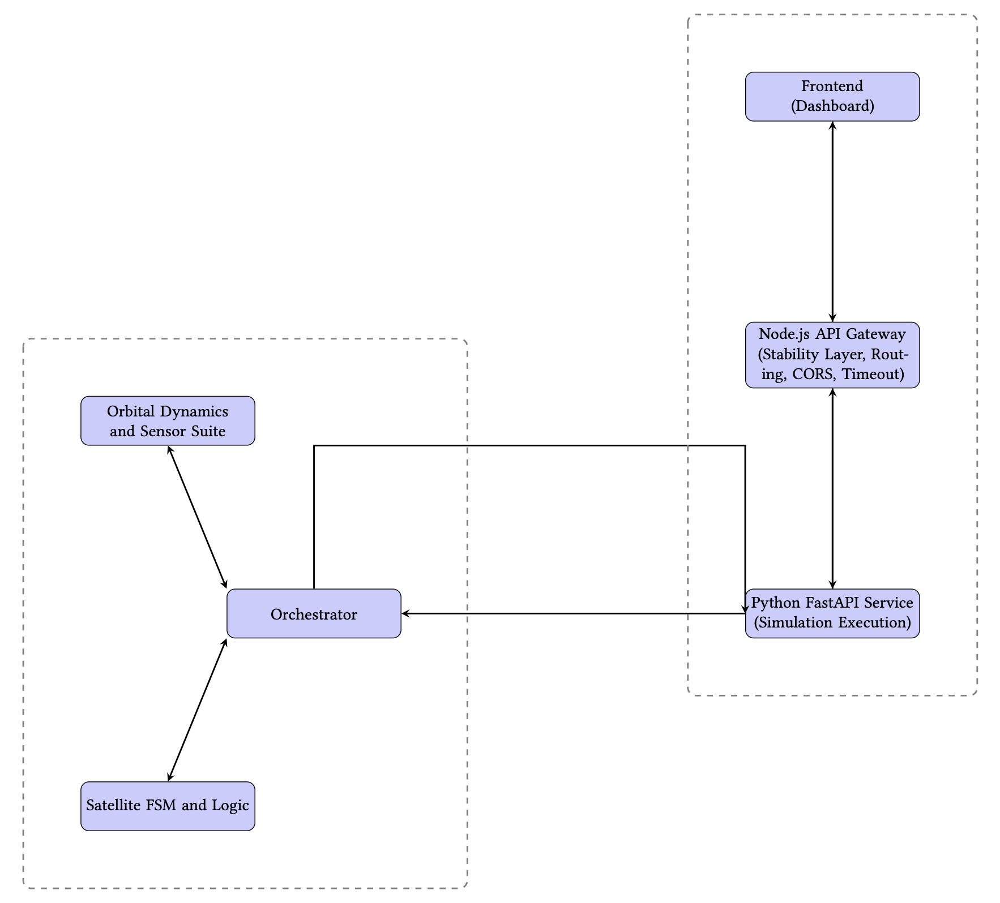

Sentinode X
Satellite Telemetry Simulator
Status: Initial Prototype (Active Development)
Sentinode X is an experimental satellite telemetry simulator project aimed at modeling, simulating, and visualizing real-time satellite telemetry data flows. It leverages Node.js and Python to create a complete ground segment mock-up.
Demo Video
Watch the system in action — the telemetry dashboard and live anomaly detection pipeline.

System Architecture
The architecture models a typical satellite ground system, separating data generation (Simulator) from data handling (Ground Segment). This modular design facilitates testing of individual components, especially the data ingestion and anomaly detection pipelines.
Key Implementation Details
- Telemetry Generation: Uses a Node.js server to generate realistic, time-series data for various satellite bus subsystems (power, temperature, attitude).
- Data Pipeline: Data is ingested into an SQL database, simulating archival and immediate access for monitoring tools.
- Predictive Analytics: Implements Python and Neural Networks to process simulated telemetry and predict component failures or detect anomalies in real-time.
Frontend Snapshots (Control Dashboard)
The web-based dashboard provides a real-time view of the simulated satellite's health and operational status.
The project is a foundational piece for exploring future work in AI-driven Space Situational Awareness (SSA) and Autonomous Satellite Operations.
🚀 For now, the project is in early development. Further details and implementations will be added soon.